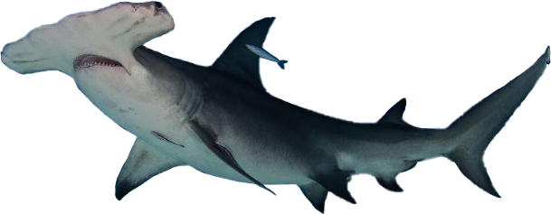
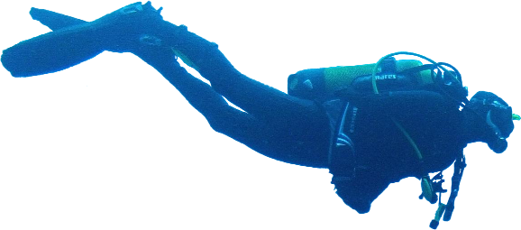
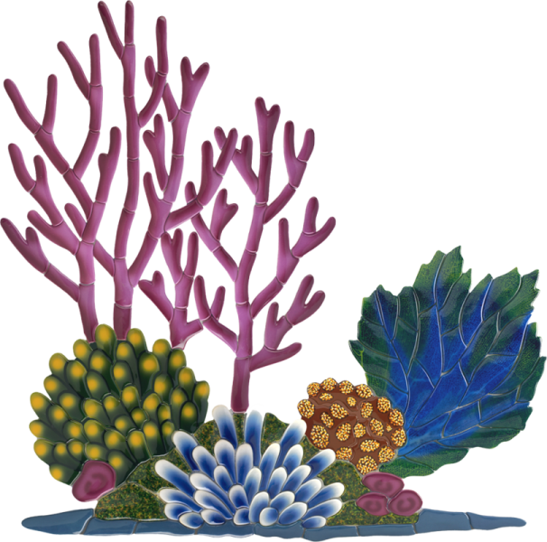
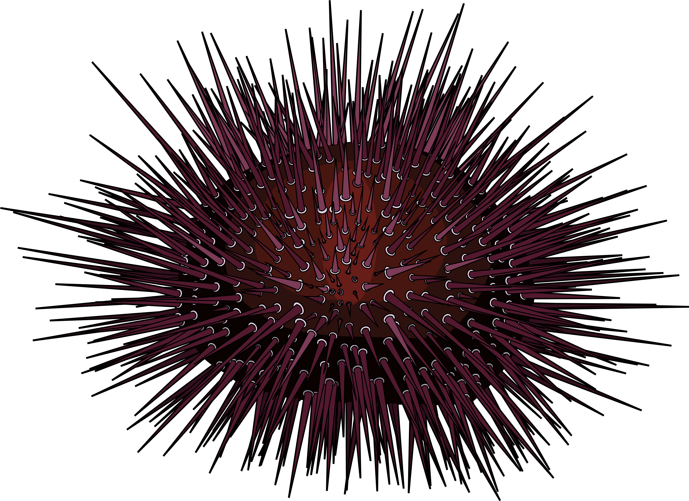
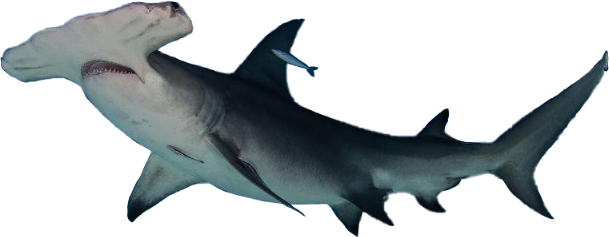
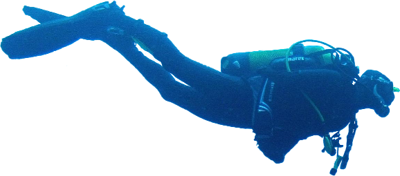
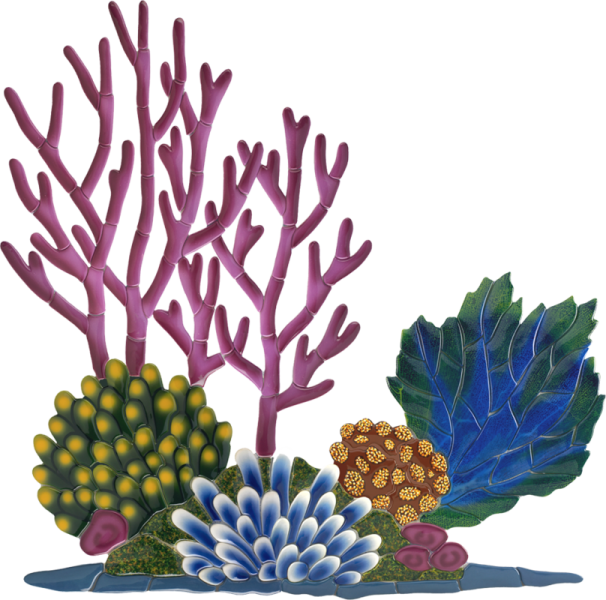
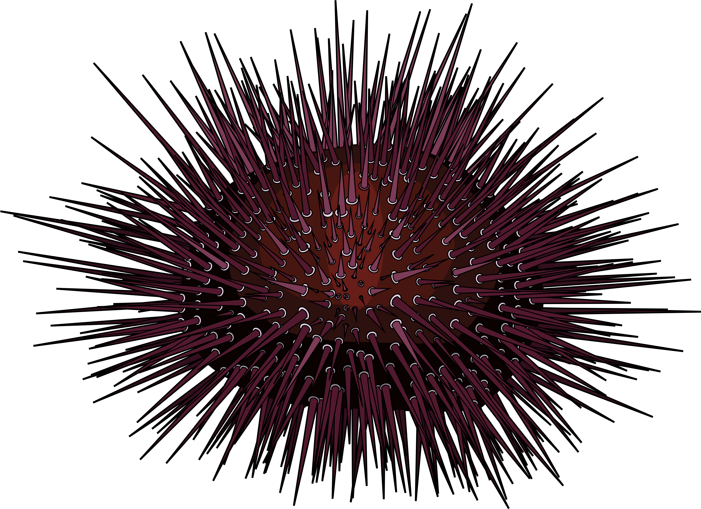
Trykk her for info om Hammerhode Haien
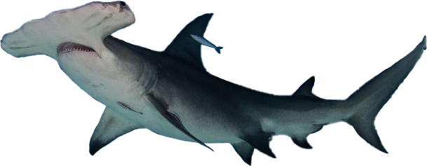
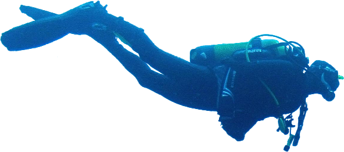
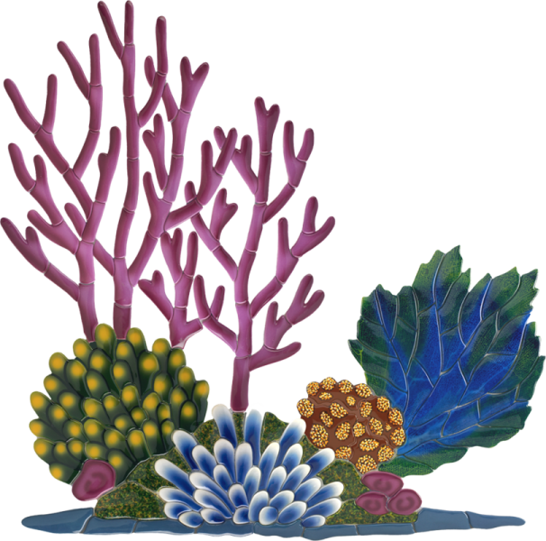
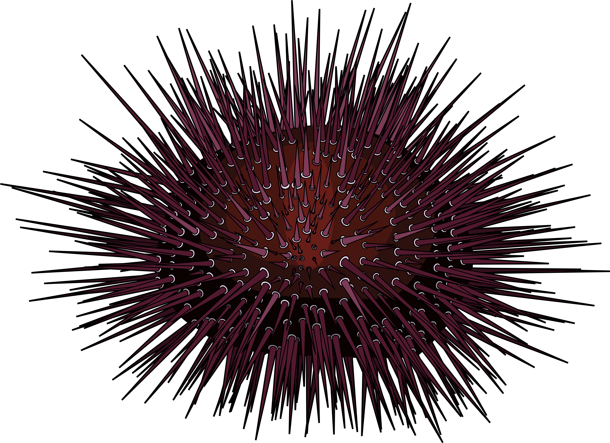
Klovnefisken (også kalt anemonefisk) er en liten tropisk fisk som lever i korallrevene. Det er et totalt 29 arter av klovnefisken splittet mellom to grener. Fisken på bildet her er arten Amphiprion Ocellaris, som er den mest kjente fargekombinasjonen av klovnefisker, de kan også være en variasjon av gul, oransje, rød og svart farger mens de i hovedsak viser hvite striper eller flekker over kroppen deres.
Kråkeboller er sjøpiggsvin med bolleformet kalkskall tett besatt med pigger, også kalt regulære sjøpiggsvin.
Det er tre forskjellige arter hammerhode hai i vannet nord-vest fra Australia, det er bare en av de artene som er farlig for mennesker. Denne haien (Sphyrna Mokarran) er listet som en sårbar art, mens de andre hammerhode artene (Sphyrna Lewini) har blitt listet som utrydningstruet arter.